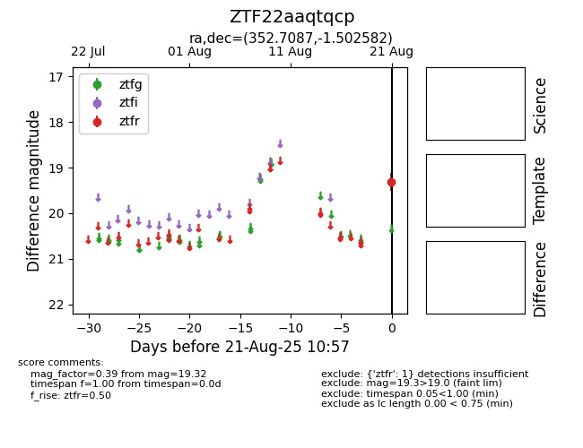

Target ZTF22aaqtqcp at 2025-08-21 10:57, see:
FINK: fink-portal.org/ZTF22aaqtqcp
Lasair: lasair-ztf.lsst.ac.uk/objects/ZTF22aaqtqcp
ALeRCE: alerce.online/object/ZTF22aaqtqcp
alt names
ZTF22aaqtqcp (ztf,alerce)
coordinates:
equatorial (ra, dec) = (352.7087,-1.50258)
galactic (l, b) = (82.5285,-57.90636)
photometry
last ztfr=19.32
1 ztfr detections
